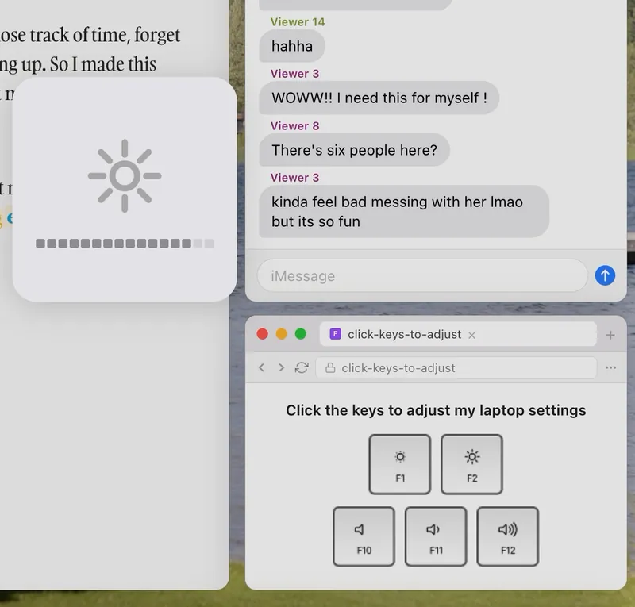
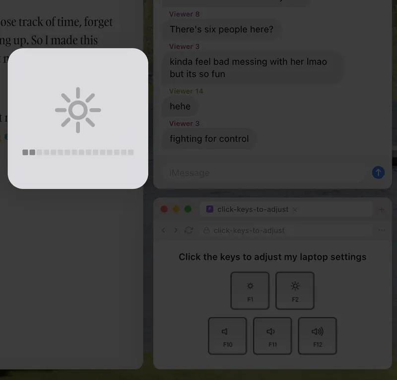
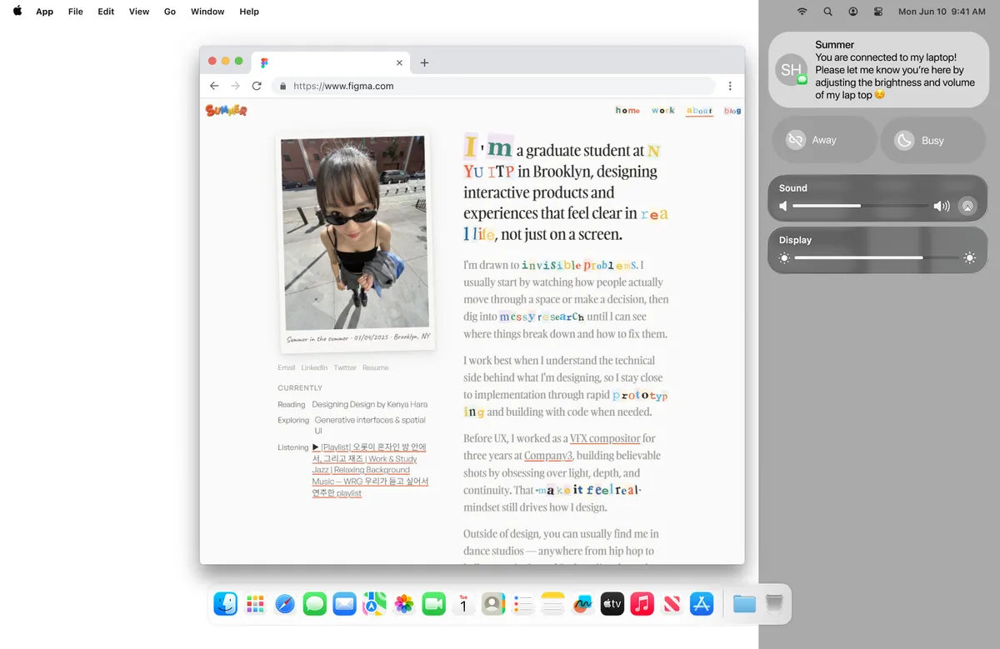
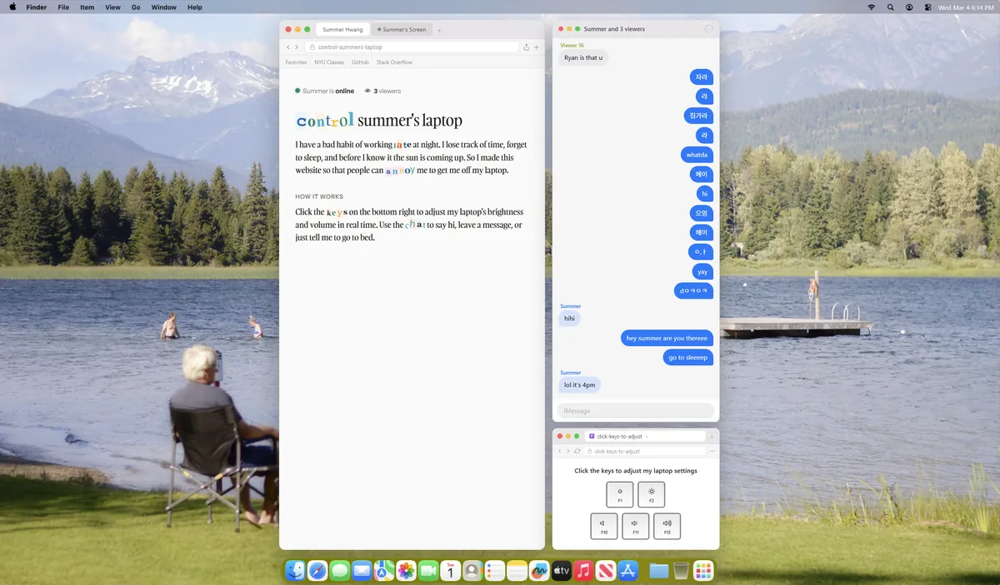
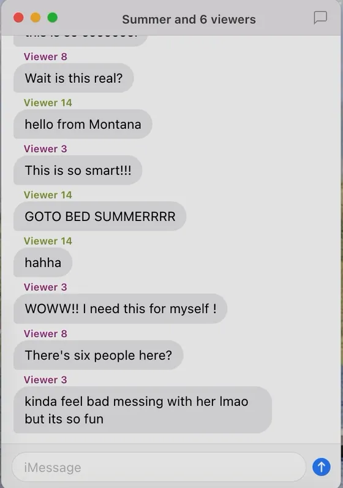
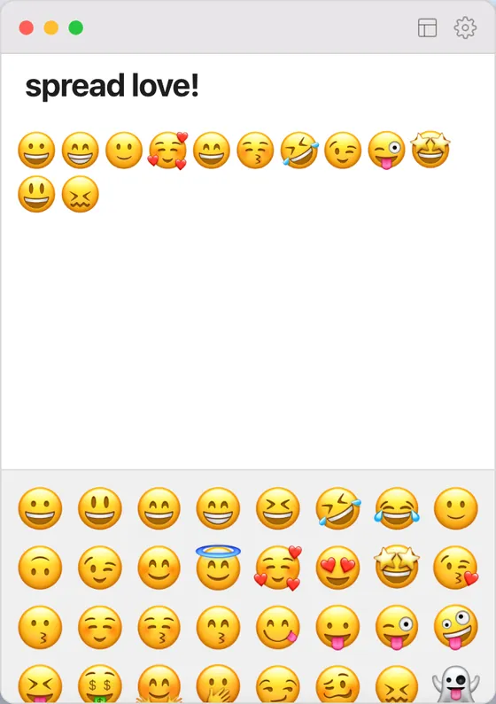

Control My Laptop
A live website where strangers change my laptop's brightness and volume in real time.
I have a bad habit of working late, so I built a website where anyone can annoy me off my laptop: visitors press keys that change my real laptop's brightness and volume. I designed and built it in two weeks for NYU ITP's Live Web class. When trolls took over its chat, I redesigned the chat while people were still on the site.
A button on a website that changes someone's real laptop sounds fake. People doubt it before they press anything.
Make the website look like a laptop screen, so the press and the result happen in the same place.
01 · The desktop
I made the website look like a desktop, so strangers would believe it's my real laptop
The idea came from Nolen Royalty's Global Capslock Key, which lets strangers toggle one key on his keyboard. Claude built my first version from a prompt. Every button worked, but it looked like every other AI-generated site. So I gave Claude a lo-fi wireframe, real macOS assets and the content for each window, and directed it into a desktop that mimics my own Mac screen.
Then I added the overlay a Mac shows when you press a brightness key, and a black layer that really dims the page. You watch the laptop respond.


02 · Testing
I watched 10 friends try it, and the sliders fought each other
When two people dragged the same slider, it jumped back and forth between them. A key press is one step with nothing shared to fight over, so I replaced the sliders with function keys. The same test showed that my portfolio in the main window confused new visitors, so that window now explains the site in one paragraph.


Behind each key press
A crowd pressing at once moves the laptop in steps instead of breaking it.
03 · The chat
I added a group chat, and at hour 12 trolls took it over
With keys alone, nobody knew if anyone else was there, so I added an iMessage-style group chat. For 12 hours it worked as I hoped. Then my post on X brought a wave of anonymous visitors, and with about 30 people in the chat, trolls started spamming offensive messages.
I had designed for curious, playful people and left an open text box with no moderation. I fixed it while the site was live:
- 1
A Gemini filter
Screened every message. Trolls found ways past it.
- 2
New rules, live
Every rule I added, they worked around. I couldn't out-prompt them.
- 3
Emojis only
I swapped the text box for a Notes window of emojis I chose. Nothing left to filter.


Where it stands
summerlaptop.me is still live, and the chat is back on
Once the wave from X moved on, I turned the chat back on. Emoji mode is one switch away if trolls come back.
Test with strangers, not just friends. My friends used the chat nicely because they know me; the worst cases only appeared with anonymous visitors.
Build moderation into the first version instead of adding it during a live crisis.